Image 1 of 1: ‘course_flow’
Image 1 of 1: ‘MR_relax’
Image 1 of 1: ‘relax_tissue_contrast’
Image 1 of 1: ‘T1’
Image 1 of 1: ‘T2’
Image 1 of 1: ‘Drawing’
Image 1 of 1: ‘mprage’
Image 1 of 1: ‘Drawing’
Image 1 of 1: ‘kspace’
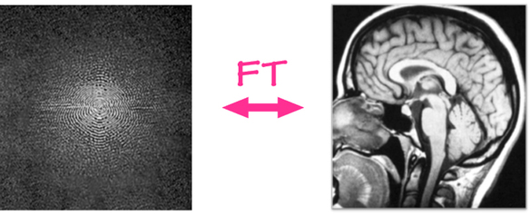 Image 1 of 1: ‘nilearn_T1’
Image 1 of 1: ‘nilearn_T2’
Image 1 of 1: ‘course_flow’
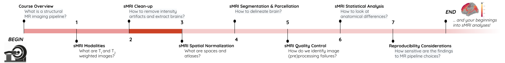 Image 1 of 1: ‘N4_bias’
Acquired T1w image (b) Estimated the bias field which can then be
used to “correct” the image. (c) Bias field viewed as a surface to show
the low frequency modulation. 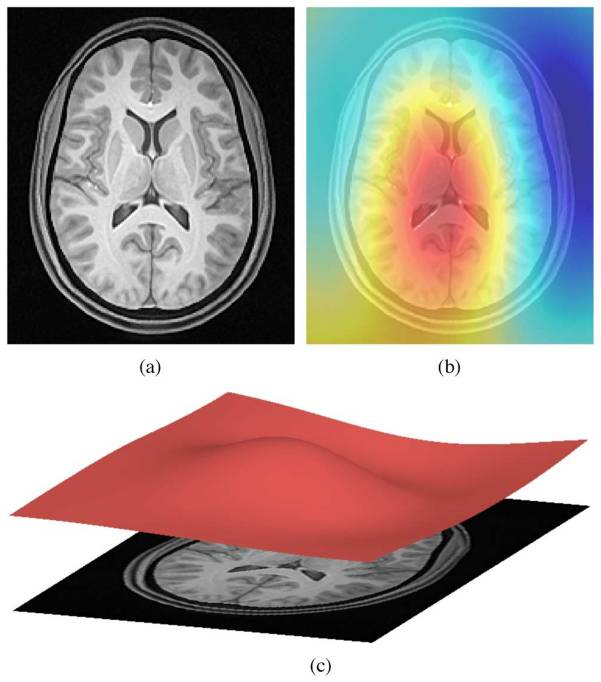
Image 1 of 1: ‘bias_correction’
Image 1 of 1: ‘nilearn_bias_orig’
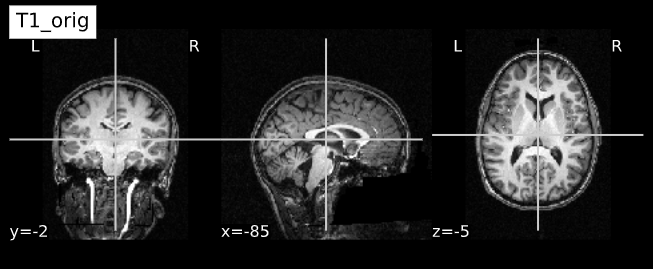
Image 1 of 1: ‘nilearn_bias_corr’
Image 1 of 1: ‘Drawing’
Image 1 of 1: ‘Drawing’
Image 1 of 1: ‘ANTs_brain_extract’
Image 1 of 1: ‘FSL_brain_extract’
Image 1 of 1: ‘nilearn_brain_orig’
Image 1 of 1: ‘nilearn_brain_extract’
Image 1 of 1: ‘course_flow’
Image 1 of 1: ‘slicer_coordinate_systems’
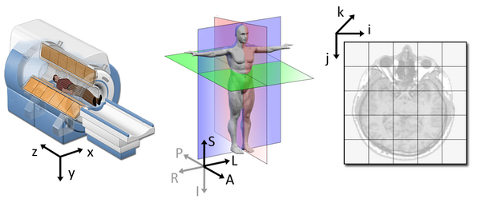 Image 1 of 1: ‘Drawing’
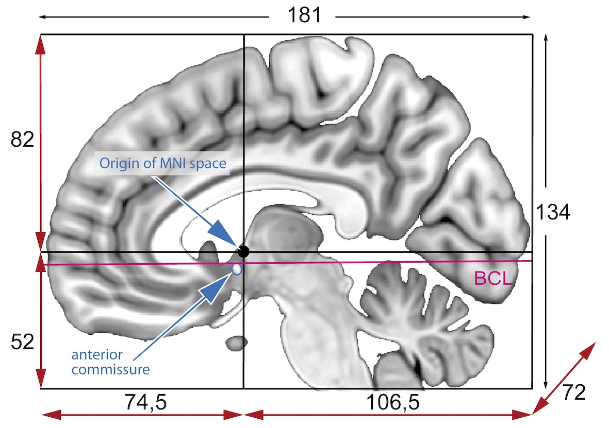 Image 1 of 1: ‘Drawing’
Image 1 of 1: ‘MNI_spaces’
Image 1 of 1: ‘mni_icbm152’
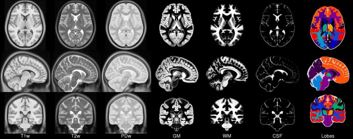 Image 1 of 1: ‘registration_cartoon’
Image 1 of 1: ‘rigid_process’
Image 1 of 1: ‘nonlinear_deform_process’
Image 1 of 1: ‘nilearn_reg’
Image 1 of 1: ‘subject_vs_ref_space’
Image 1 of 1: ‘course_flow’
Image 1 of 1: ‘Brain tissue types’
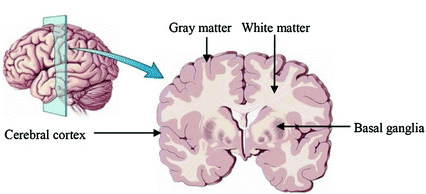 Image 1 of 1: ‘Brain atrophy due to Alzheimer's or severe multiple sclerosis disease’
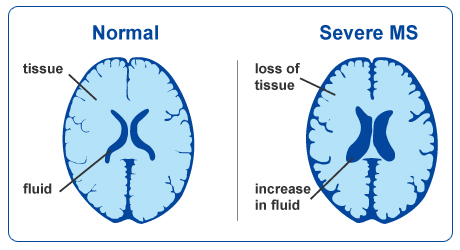This image is Copyright © My-MS.org and falls under Image License D
defined under the Image License section of the My-MS.org Disclaimer
page.
Image 1 of 1: ‘Axial slice of the T1 data (after skull-stripping)’
Image 1 of 1: ‘Histogram of the T1 volume data, all tissues together’
Image 1 of 1: ‘Tissue classes overlayed on the T1 data’
Image 1 of 1: ‘Histogram of the T1 volume data, one distribution per tissue’
Image 1 of 1: ‘GM probability map’
Image 1 of 1: ‘Delineation of GM and WM’
Image 1 of 1: ‘Delineation of GM and WM’
Image 1 of 1: ‘Pial mesh from surface segmentation’
Image 1 of 1: ‘WM mesh from surface segmentation’
Image 1 of 1: ‘WM mesh from surface segmentation’
Image 1 of 1: ‘AAL atlas’
Image 1 of 1: ‘ROI from the AAL atlas’
Image 1 of 1: ‘Left hemisphere of the Destrieux surface atlas’
Image 1 of 1: ‘ROI of the Destrieux surface atlas’
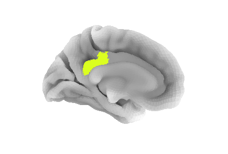
Image 1 of 1: ‘course_flow’
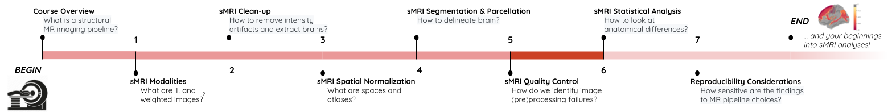 Image 1 of 1: ‘Drawing’
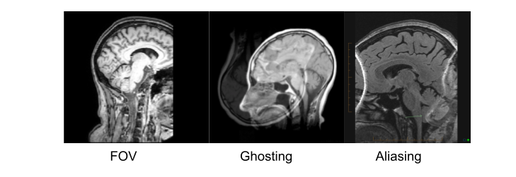 Image 1 of 1: ‘Drawing’
Image 1 of 1: ‘Drawing’
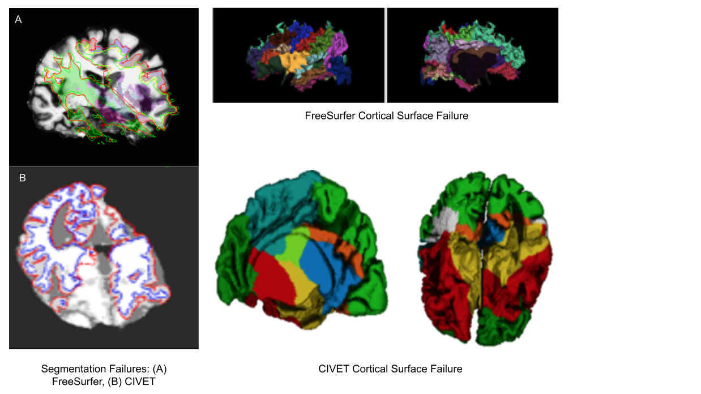 Image 1 of 1: ‘HC_and_CB_MAGeT’
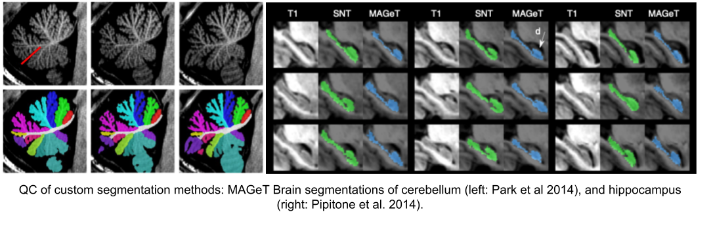 Image 1 of 1: ‘Drawing’
Image 1 of 1: ‘Drawing’
Image 1 of 1: ‘Drawing’
Image 1 of 1: ‘t1_mri_visual_QC’
Image 1 of 1: ‘alignment_mismatched_colormix_visualQC’
Image 1 of 1: ‘cortical_zoomed_in’
Image 1 of 1: ‘course_flow’
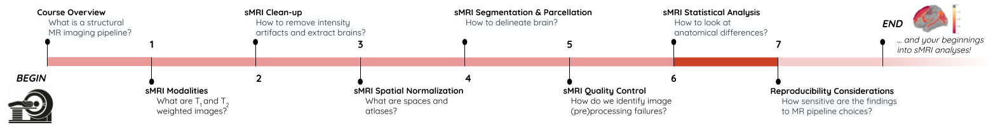 Image 1 of 1: ‘Caudate nucleus from Freesurfer segmentation’
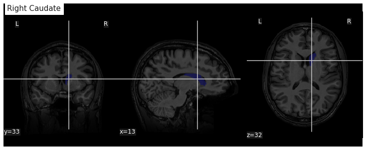 Image 1 of 1: ‘Cortical thickness visualization for a given subject’
Image 1 of 1: ‘Group cortical thickness boxplot’
Image 1 of 1: ‘Example of cortical thickness variation with age in an ROI’
Image 1 of 1: ‘Cortical thickness vs age - p values’
Image 1 of 1: ‘Cortical thickness vs age - adjusted R squared’
Image 1 of 1: ‘Cortical thickness vs age - surface t values on left hemi’
Image 1 of 1: ‘Cortical thickness vs age - surface t values on right hemi’
Image 1 of 1: ‘VBM template creation’
Image 1 of 1: ‘VBM template creation’
Image 1 of 1: ‘VBM mean warped maps’
Image 1 of 1: ‘VBM mean warped maps’
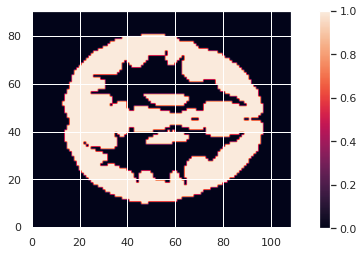 Image 1 of 1: ‘VBM mean warped maps’
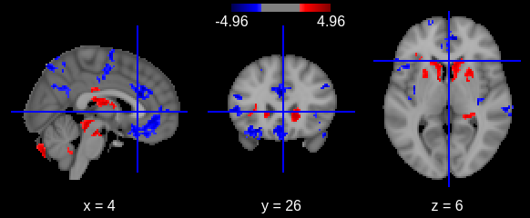 Image 1 of 1: ‘VBM mean warped maps’
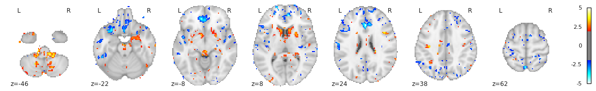
Image 1 of 1: ‘course_flow’
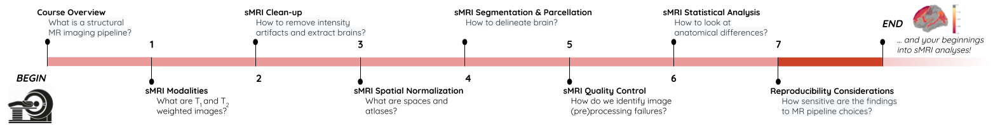 Image 1 of 1: ‘Drawing’
Image 1 of 1: ‘Drawing’
Image 1 of 1: ‘Drawing’


 )
)